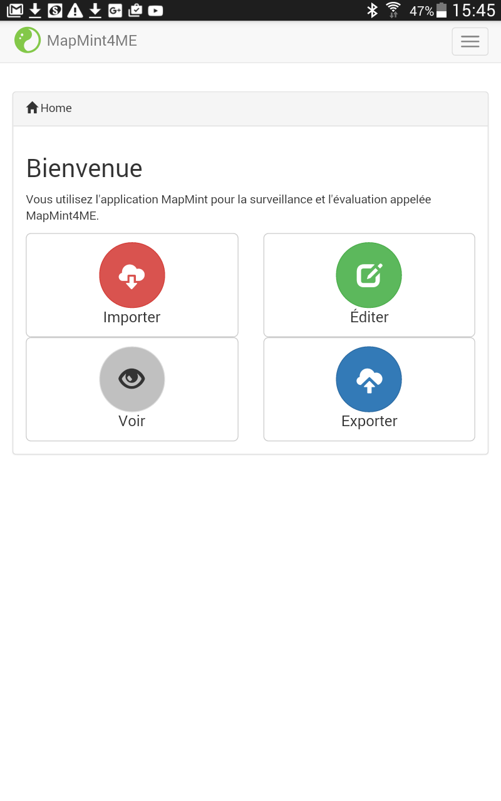
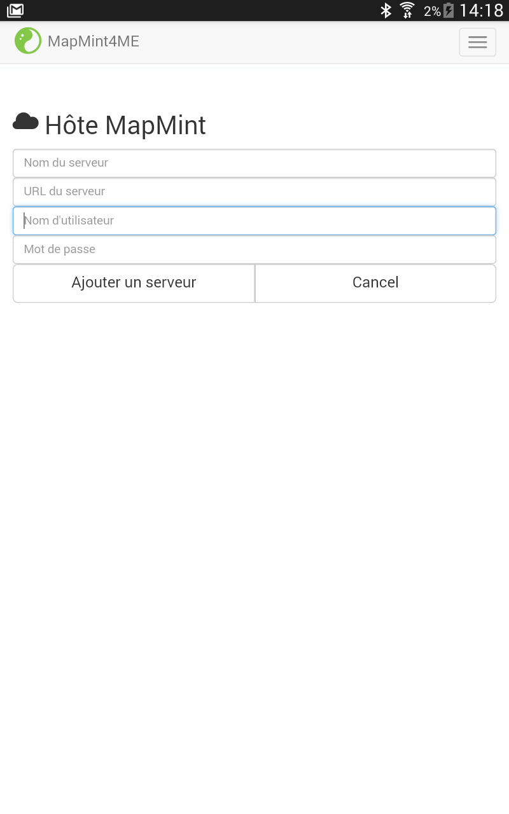
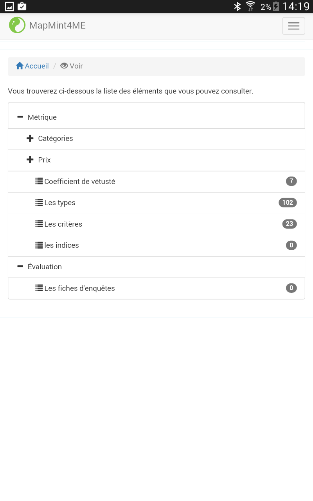
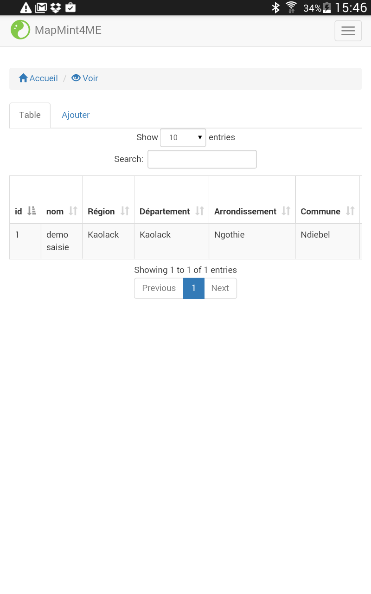
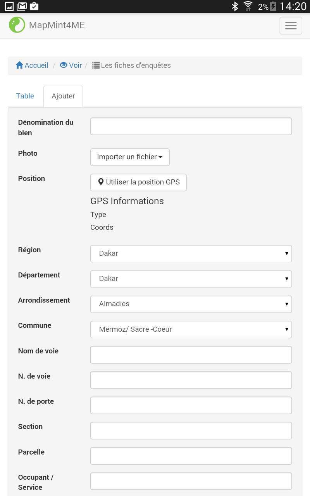
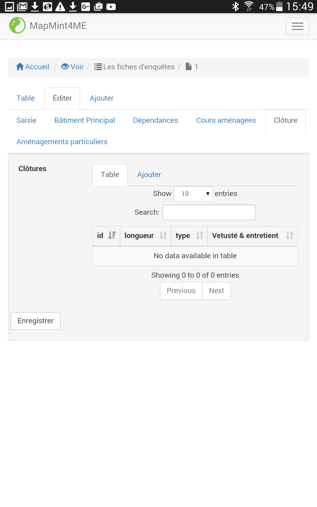
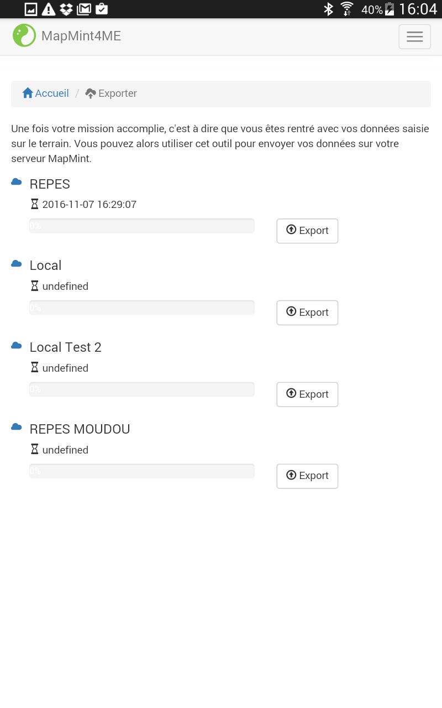

Utilisation de MapMint4ME¶
MapMint4ME signifie MapMint for (4) Measure and Evaluation, soit MapMint pour la mesure et l’évaluation.
C’est un outil qui vous permet d’éditer des données en mode déconnecté.
Installation¶
L’installation de MapMint4ME se fait de la même manière que pour toute autre application via le GooglePlay Store.
Lors du lancement de l’application MapMint4ME, vous devriez obtenir un affichage équivalent à la capture d’écran présentée ci-desous.
{kind=link}
Les différentes étapes¶
Une fois l’applicaiton MapMint4ME installée sur votre tablette Android ou votre téléphone portable, vous devez suivre les 3 étapes suivantes :
- Importer : permettant d’importer les tables de la base de données utlisée par MapMint pour produire les formulaires de saisie et les interfaces de visualisation de données
- Voir / Éditer : permettant d’accéder aux données et / ou au formulaires de saisie pour le travail sur le terrain
- Exporter : permettant d’envoyer les données que vous avez saisie en mode déconnecté sur le serveur
Importer¶
Le module “Importer” de MapMint4ME est utilisé afin de récupérer l’ensemble des données nécessaires afin de procéder aux saisies en mode déconnecté.
Lors de la première ouverture de MapMint4ME, vous n’avez aucun serveur MapMint enregistré, il est donc nécessaire d’en ajouter un à l’aide du bouton “Ajouter un serveur”. Une fois que vous avez appuyé sur ce bouton, vous devriez voir apparaitre un formulaire semblable à celui présenté ci-desous.
- Ici, vous devez remplir les champs suivants:
- Nom du serveur : le nom qui sera affiché dans la liste des serveurs disponibles depuis le module “Importer” et “Exporter”,
- URL du serveur : l’url du ZOO-Kernel associé à votre instance MapMint
- Nom d’utilisateur : le nom d’utilisateur est le même que celui vous permettant d’accéder à l’interface de saisie en ligne via le module public tables
- Mot de passe : le mot de passe de votre utilisateur.
Une fois l’ensemble de ces champs renseignés, vous pouvez alors presser le bouton “Ajouter un serveur” pour ajouter effectivement le serveur.
En cas d’erreur un message devrait apparaitre brièvement vous indiquant les raisons de l’échec de connection au serveur.
{kind=link}
Une fois le serveur ajouté, vous n’avez plus qu’à presser le bouton “Importer” sur la ligne présentant le nom de votre serveur.
Warning
L’importation est un processus relativement long, temps que l’importation des données ne sera pas réalisée vous ne pourrez pas saisir de données en mode déconnecté. Il est donc impératif de laisser ce processus s’exécuter jusqu’à son terme.
{kind=link}
Note
Vous pouvez visualiser la date et l’heure de la dernière importation réalisée pour un serveur MapMint donné. Dans le cas où vous n’auriez jamais importer depuis un serveur MapMint, vous devriez alors voir “Undefined” à la place de la date et l’heure.
Voir / Éditer¶
Les deux modules Voir et Éditer sont relativement similaires, c’est la raison pour laquelle nous les décrivons dans une seule et même section.
Lorsque vous chargez l’un de ces deux modules, vous obtenez alors l’affichage suivant. Bien entendu, on suppose ici que vous ayez au préalable importé les données du serveur MapMint que vous avez configuré lors du premier démarrage de MapMint4ME. Vous pouvez alors accéder aux tables dans un menu, pour accéder à la table d’un sous-menu, cliquez sur la ligne indiquant le nom du sous-menu pour voir s’afficher la liste des tables disponibles pour ce sous-menu. Pour charger le formulaire d’édition ou visualiser la liste des éléments déjà présents dans une table, cliquez simplement sur le nom de la table que vous souhaitez éditer / visualiser.
{kind=link}
Une fois une table chargée la liste des éléments presents sont présentés sous la forme d’une table comme présenté ci-dessous ainsi que le formulaire, pour les utilisateurs autorisés, permettant d’ajouter un élément à la table. Dans le cas de l’utilisation du module Éditer, seul le formulaire d’ajout est présent.
 {kind=link}
{kind=link}
Une fois que vous avez terminé la saisie d’un élément depuis le formulaire présent dans l’onglet “Ajouter” présenté ci-dessus. Vous pouvez alors le sélectionner dans la table affichant les éléments afin d’accéder au formulaire de saisie d’un élément permettant d’éditer l’ensemble des champs d’une table. Le formulaire d’édition dépend bien sur beaucoup de la configuration que vous aurez faite pour configurer les interfaces de saisie depuis l’interface d’administration de MapMint dans le module de gestion des tables. Néanmoins, nous présentons ci-dessous l’affichage typique d’un formulaire de saisie, pouvant par exemple permettre de saisir des éléments d’une table liée (via une clé étrangère) comme c’est le cas dans cet exemple précis.
{kind=link}
Ici, vous pouvez soit éditer les données propres à la table (le fonctionnement est identique à l’ajout d’un élément) soit aux tables liées, dans ce cas, utilisez le formulaire d’ajout comme expliqué précédemment.
Exporter¶
Une fois vos saisies sur le terrain terminées, vous pouvez les reporter sur le serveur MapMint permettant de réaliser des saisies en ligne. Vous devez donc reconnecter votre tablette ou votre téléphone portable Android à internet afin de pouvoir envoyer vos saisies sur le serveur.
Commencez par charger le module Exporter depuis la page d’accueil de l’application, puis cliquez simplement sur le bouton “Exporter” sur la ligne correspondant au serveur MapMint sur lequel vous souhaitez envoyer vos saisies. Une fois le processus terminé, vous pouvez alors consulter depuis l’application en ligne et constater la présence de vos saisies dans votre système d’informations.
Warning
Le processus d’émission de la base de données nécessite d’envoyer l’ensemble de la base de données initialement récupérée depuis le serveur MapMint lors de phase d’importation décrite précédemment. Ce processus peut donc être long et dépend grandement de la qualité de votre connection et du poid des données nécessaires à la génération des formulaires de saisie.
Une fois le processus d’exportation terminé, la base base de données stockée sur votre tablette ou votre téléphone portable Android est alors vidée des saisies que vous avez réalisé et exporté.
{kind=link}
Note
Vous pouvez visualiser la date de la dernière exportation réalisée pour un serveur MapMint donné.